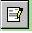

GRIMS - Wheat
From ICISWiki
Contents |
Overview of the Wheat Genebank
- The Inventory Location consists of <Collection>-<Car>-<Section>-<Shelf>-<Box Number> (E.g. A-3-B-3-8)
- A Box can consist of
40 envelopes - active 80 - base 400 - ICARDA/Colorado
- The amounts of the envelopes are
250 grams - active 100 grams - base 10 grams - Colorado/ICARDA
- The request of seed is usually based on cross name/selection history and characterization
- The multiplication and regeneration trials have TID from 50001 to 55000
Issues
- There is a need to have the date the inventory is verified or checked.
- There is an accession with more than one introduction number.
- Where will be the data entry of the incoming seeds? Will it be initially entered through WFBS or in GRIMS itself?
If in WFBS, GRIMS will just copy the list from the central IWIS3 and CID/SID will be automatically assigned. If in GRIMS, list will be just copied by WFBS but no CID/SID is assigned yet.
- The label of the packet is a report in WFBS. Should the barcode be just an additional item in that label? OR should there be a separate label for barcode
Barcode & Labels
Size of Label: 6cm x 2.7 cm pre-cut labels in 8.5 X 11 inches paper
- barcode of the packet or envelope will be the LOTID prefixed with WHT-
- barcode of the box will be the LOCID or location
The Genebank Processes using ICIS/IWIS
- The Incoming seeds can be entered in IWIS, thereby CID/SID will be assigned. It will be uploaded as central list in IWIS3 [Original Seed]
- A Workbook of the incoming seed list can be given to SIDU for seed health testing and the result can be entred directly in that Workbook
- Related Passport information will be entered as Attributes of the germplasm/accession or in a Study by Genebank staff
- Multiplication or Regeneration Trial will be created as List using SetGen
- If there are characterization data recorded from the Multiplication Trial, it will be entered as a Study with the Trial Name as Study Name
- The data gathered (Moisture content, Germination rate, Weight) while undergoing the drying process will be stored as a Study with the Incoming Seed List as Study name or they can be variables of the Multiplication Trial
Migration of the Wheat Genebank Data to ICIS
- Inventory Locations
Seed storage location recorded in MapActive.xls loaded to Location table
1st Level – Collection
2nd Level – Car
3rd Level – Section
4th Level – Shelf and Box position
- Trials
Records from the WFB_Trial was linked with the germplasm records in the IWIS3-WGB-GMS.mdb. Hence, only trials found in the database were uploaded in the LISTNMS table.
LISTDESC = TRIAL Name
LISTNAME = TID # : TRIAL ABBR
LISTID = -TID
- Entries of Trials
The LISTNMS table is linked with the TID extracted from the names of the germplasms in the IWIS3-WGB-GMS. The germplasms for the trials in the LISTNMS table were added in the LISTDATA table.
- Active Collection
Using the MapActive.xls:
- SetGen lists where created to represent the location or boxes in the Active collection.
- Lists of boxes were created following the hierarchy of the loction.
- There are 2,945 boxes or lists where entries are found in GMS.
- There are still 138 boxes with entries not fount in GMS. 20 of them have unknown trials while 108 have unknown entries in GMS.
- There are 6,614 unique boxes in the Active collection file. 3531 of them are unfilled locations.
Note': There were boxes where the number of entries exceed 40 which is the maximum number of packets that can be stored in the box.
- Base Collection
Using the Camera Basica file,
- 1,508 boxes or locations were created where entries were found in GMS
- 305 boxes with unknown trials
- 4,478 unfilled boxes
- Passport Data
Using the Passport Hilda table
- 63,078 Entries out of 74,966 found in GMS with same CID and SID
- 11,669 Entries found in GMS with different CID or SID in Passport_Hilda
- 219 Entries not found in GMS
- Uploaded the following
Country of Origin 40,458 Habitat 17,705 Donor Country 63, 076
Reinventory and Label Printing
Folders in SetGen to track the activities
1 - Verified Lists : will contain lists of boxes where entries are already verified
2 – Created Lots and Initial Deposits : will contain lists where lots and initial transaction deposits are created
3 - Printed Labels : will contain lists where labels are printed
4 – Stick Labels : will contain lists where labels are aleady attached to the packets
5 – Weight Verified : will contain lists where weight are verified and committed
9 - Lists to be Moved to Another Location : will contain lists that need to relocate to another location or locate in the collection its current position
Different scenarios or cases of boxes
- Trial and box location is known
- Run SetGen.
- Edit the List that corresponds to the Box
- If the trial in the list is different from the box,
- Create new List with similar name as the specified box and end with a suffix _OLD
- Browse the box list and tag all and add to the newly created list
- Save the list
- Move the newly create list under the folder “9- Lists to be Moved to Another Location”
- Edit the target Box being verified.
- Tag all and remove entries
- Highlight in List Manager the trial corresponding to the box
- Browse the Trial list
- Tag the entries in the Trial list and click the + button. Make the Entry Code of the box entries the same as in the trial list by marking the ENTRY CODE option
- If the trial list is the one in the box
- Double click on the List corresponding to the box
- Add entries that are not in the physical box to the list
- Remove entries that are not in the physical box from the list
- Save the list
- Move the List to the folder “1 – Verified List”
- Data about the amount of harvested seeds are available and entered in an Excel file
- Incoming Seeds with no Introduction Number
General Approach
- Active Collection
- Create initial lists of boxes with their corresponding entries based on the information from MapActive. This was done by batch upload to the LISTNMS and LISTDATA tables.
- Take out a box
- Verify entries of the list with the packets in the box. This can be done by using a printout of the list or viewing the list in SetGen.
- Remove entries from the SetGen list that are not in the box
- Add entries in SetGen list that are not there but in the box or transfer those entries to another location
- Using InTrack, create lots and deposit an initial amount.
- Using InTrack Admin (or other label printing program), print the barcodes of the entries of the list
- Stick the barcode labels on the packets
- Using InTrack Admin, read the barcode and update the initial deposited amount.
- Using InTrack Admin, Commit the final amount.
- Base Collection
- For boxes whose entries are identified in the GMS, follow the steps of re-inventory of Active
- For other boxes,
- Take out a box
- Edit the box list in SetGen
- Determine the source trial and locate in the SetGen List Manager
- Browse the list in SetGen
- Select entries from the source trial that are in the boxes
- Advance one generation using Seed Increase Method
- For other trials in the box, follow step 2.3 to 2.6
- Save the box list being edited
- Using InTrack, create lots and deposit an initial amount.
- Using InTrack Admin (or other label printing program), print the barcodes of the entries of the list
- Stick the barcode labels on the packets
- Using InTrack Admin, read the barcode and update the initial deposited amount.
- Using InTrack Admin, Commit the final amount.
Some Recommendations
- Assign someone to verify the list from SetGen and the actual items inside the box.
- Assign someone to create lots, do initial deposit (amount equal to maximum allowed) and print barcodes.
- Assign someone to stick the labels and give back to person who generated the lots/labels to update weight data.
- Barcode reader and weighing scale to be purchased from the same vendor for easy support.
- Dedicated computer where the barcode reader and the weighing scale will be connected.
- Database manager should be in charge, if possible, to keep track of management of the system.
Retrieval of the Viability Data
Retrieve the data using Retriever
- 1. Run the Retriever from the Launcher.
- 2. Click the option "Viability Data". New options in the Switchboard will appear.
- 3.To retrieve all data about viability, click the "All Viability Data" option
- 4.To retrieve records with low viability, click the option "Run Query: Low Viability". Currently, the definition of low viability is less than 75%.
Edit the percentage value in the query Low Viability
- 1. From the menu, click Edit RTV Query > Main

- 2. Highligh the Viability_Low query and click Edit.
- 3. Under the list of FILTERS in the Main Query form, highlight the Viability variable and click 

- 4. Change the value of viability and click the Edit button.